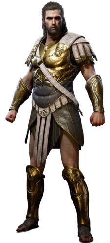

.
.
Born to Myrrine and Nikolaos during the mid 5th century BCE in Sparta, Lakonia, Alexios was the younger half-sibling of Kassandra and a grandson of King Leonidas I of Sparta.Not long after his birth the Pythia at the time, Praxithea, gave a prophecy that the grandchildren of Leonidas would lead to the downfall of Sparta. It was unknown to those involved at the time that the "prophecy" had been concocted by the Cult of Kosmos in order to wipe out the bloodline of Leonidas, as retribution for his defiance decades earlier,[4] so despite their regal blood, the Elders of Sparta demanded the childrens' deaths, and they were to be thrown from the summit of Mount Taygetos.Alexios survived his planned execution due to the actions of his elder sister, Kassandra, who intervened and caused the death of a Spartan elder – which in turn led to her own failed execution and eventual exile. Alexios himself was found, badly broken and near death, by Myrrine and taken to the Sanctuary of Asklepios in Argolis for healing.Whilst in the Sanctuary, Alexios was identified as a descendant of Leonidas–one who possessed the power of the gods–by Chrysis, a member of the Cult of Kosmos, and kidnapped. He was secreted away and Myrrine was tricked with the body of a similar child who had recently died.Under Chrysis' care, Alexios grew up to become a weapon of the Cult and was named Deimos, after the Greek god of terror, in order to inspire fear in the Cult's enemies. For the next fifteen years, Alexios served at the Cult's behest until, in 431 BCE, his first true test came in the form of his estranged sister.Under Chrysis' care, Alexios grew up to become a weapon of the Cult and was named Deimos, after the Greek god of terror, in order to inspire fear in the Cult's enemies. For the next fifteen years, Alexios served at the Cult's behest until, in 431 BCE, his first true test came in the form of his estranged sister.Recognizing Kassandra's memories of Mount Taygetos and her murder of Elpenor, Alexios demanded to know who she was, quickly realising she was his sister. Confused and enraged, he allowed her to leave and summarilily executed the next Cultist to touch the Artifact. Shortly thereafter, he pursued Kassandra to the island of Andros, and there accused her of throwing him from Mount Taygetos when he was a child; a charge Kassandra denied. He then departed, angrily.